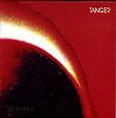

| Artist: | Tanger |
| Title: | La Otra Cara |
| Label: | Viajero-Inmovil TNGR003VIR |
| Length(s): | 43 minutes |
| Year(s) of release: | 2002 |
| Month of review: | [10/2002] |
| 1) | Zobeida | 3.00 |
| 2) | Rock Und Rolle | 2.22 |
| 3) | Anos | 3.52 |
| 4) | Los Ritos | 3.02 |
| 5) | El Ermitano | 5.38 |
| 6) | Trio | 2.41 |
| 7) | Espectros | 3.17 |
| 8) | La Otra Cara | 3.56 |
| 9) | Evocacion | 4.12 |
| 10) | Parentesis | 3.34 |
| 11) | Chacales | 4.13 |
| 12) | La Trama | 3.54 |
On Los Ritos, the band combines a very claustrophobic guitar sound with the lightness of the flute, played somewhat in Tull style, but a bit more mellow, Latin American if you like. What I like about this track, is that the musicians react to each other very well: the bass following the light flute around, a bit like a question and answer game for the band, with various themes intertwining and being handed over from instrument to instrument, sometimes taking off in different directions.
On El Ermitano we do in fact get more of the same, although the track being a trifle longer than usual, the song has a more introspective middle part with the flute meandering. The guitar wails along at times and is played in experimental fashion regularly. The tension is nicely built towards the end of the songs, but the climax comes a bit too soon for my tastes, and the music fades away too easily.
Trio is probably called that because the flute player does not play along. The guitar sound is a bit muddy here, like a murky underground rock. Melodically the does not have very much too offer to me and although they do their best to get some tension into the music, they more oft than not fall short in my opinion.
Espectros is a more aggressive track where the tension comes out better. The more pace, the better I seem to like it. The guitar gets to be quite fierce in this track at times (a better recording could have made this come out even better). The title track is in similar vein to the previous, but the moody flowing Evocacion does. Fretless bass, a sad flute and a somewhat classically played acoustic guitar take us through this somber song. Later the guitar and the sax set in, but the music stays on the quiet side.
Time for a bit of more rock in Parentesis, but in overly repetitive riffs. All in all, the music has a very free feel, but the many recurrences of themes belies the fact that these are improvisations. And for compositions, the songs often seem too uneventful to me. Having typical KC ascending chords is not always enough to get my ears watering.
Chacales is a more dreamy track again with fingerquick acoustic guitar and a percussive feel in the synths. La Trama closes down in noisy KC style, with some Tull and Ozrics thrown in. This pacey tune makes the album end on a good note.